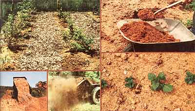

PHOTOS BY THE AUTHOR
CLOCKWISE FROM TOP LEFT: The wood chips spread between the rows of this berry patch will help the soil stay cool and moist .... ""Tree trimmin's""do borrow nitrogen from the soil, but you can solve this problem by combining wood bits with some good of nitrogen-heavy horse manure! . . . A solid ""blanket "" of woodwaste mulch can also wipe out weeds! . . . If you have a lot of territory to cover, you may need a manure spreader to strew the soil helper on your fields .... This truck is NOT unloading woodwastes at the world's most heavily mulched garden . . . the vehicle is stacking bark chips for ""aging"" at a wood-wise sawmill!